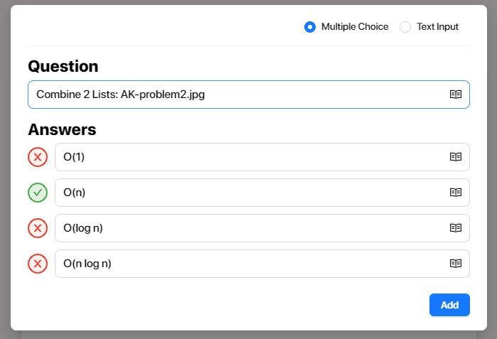

Ponder and Prove
This week, we've learned about searching and are trying to solidify our understanding of Big O for an algorithm's efficiency (aka time-complexity or work per input size).
The task for this module is to use your skills for writing algorithms to create 2 Big O questions for other members of the class using GimKit. The 2 algorithms may be sorting, searching or something from your friends' lives. It would be helpful for you as you write the algorithm to keep in mind the inputs to the algorithm so that you can determine the Big O. The question that you submit using this link should use the title of the algorithm and the name of your picture file as the question. Make sure you provide viable answers and select the Big O answer that is appropriate.

You will need to have this submitted the night before class so that we can use your questions on Wednesday (or Thursday if Tu/Th class).
You will need to submit the pictures for each of your 2 algorithms to the canvas assignment with the same name as is listed in your problem. See the image above for how to input the question and the image below for the example image that I submit to canvas for the problem.
Tips